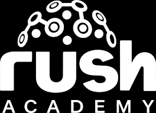

Alianza Intezia Educación + RUSH Academy · Bootcamp deep-dive
Marketing con Claude
para Web3
Bootcamp de 10 horas, co-facilitado con RUSH Academy, para que el equipo de marketing domine las diferencias específicas de Claude (voz de marca, research con long-context, producción de contenido) aplicadas a un caso real de activos digitales: una plataforma de remesas con stablecoins para América Latina.
Si usas Claude como un "ChatGPT alternativo", estás dejando sobre la mesa lo que lo hace distinto.
Claude es el frontier model más fuerte para marketing por razones específicas: mantiene el tono de marca como ningún otro, lee 200K tokens de research, brand books y transcripciones en minutos, y opera con Projects, Artifacts y Computer Use. Esta edición, en alianza con RUSH Academy, practica cada técnica sobre un caso real de activos digitales: una plataforma de remesas con stablecoins para América Latina.
Diagnóstico
- Equipos usan Claude solo como "ChatGPT alternativo", sin explotar sus diferencias clave (brand voice, long-context, Projects, Artifacts).
- Tono de marca inconsistente entre canales: cada copywriter o agencia entrega su propia versión sin sistema replicable.
- Research de audiencia y competencia toma semanas: Claude lee archivos largos (research, transcripciones, brand books) en minutos.
- Producción de copy manual y de calidad variable, sin sistema de prompts entrenados ni quality gates de marca.
- Operaciones de marketing sin agentes: distribución, análisis y reporte siguen siendo manuales.

02 · Objetivos
A dónde llevamos
al equipo de marketing.
Objetivo general
Capacitar al equipo de marketing en el dominio profesional de Claude como socio estratégico, aplicado a un caso real de activos digitales en alianza con RUSH Academy: domina el stack (Opus, Sonnet, Haiku, Projects, Artifacts), Brand Voice Engineering, research estratégico con long-context y producción de contenido con quality gates de marca.
Objetivos específicos
- Operar el stack Claude completo (Opus, Sonnet, Haiku, Projects, Artifacts) según carga cognitiva.
- Construir un sistema de Brand Voice Engineering que mantiene el tono de marca consistente en todos los outputs.
- Hacer research estratégico con Claude y Files aplicado al caso de activos digitales: personas, competencia y frameworks.
- Producir contenido multi-formato (long-form, short-form, guiones, email, localización) con calidad y voz consistente.
- Automatizar producción y distribución con Claude Projects, Artifacts, Computer Use y servidores MCP (Model Context Protocol).
03 · Programa
5 módulos.
Stack Claude para Marketing
Domina el stack completo de Claude y selecciona el modelo y la superficie correcta para cada tarea de marketing.
- 1.1 Modelos: Opus 4.7 · Sonnet 4.6 · Haiku 4.5
- 1.2 Claude Projects · Artifacts · Files
- 1.3 Custom Instructions · Computer Use
- 1.4 Claude frente a otros frontier models
- 1.5 Setup productivo del workspace
Brand Voice Engineering
Construye un sistema replicable de tono de marca: style guide vivo, tone matrix por canal y quality gates automáticos.
- 2.1 Brand Voice Engineering · método
- 2.2 Style guide vivo en Claude Project
- 2.3 Tone matrix · canal × audiencia × formato
- 2.4 Quality gates de marca
- 2.5 Verificación crítica de outputs
Estrategia y Research con Claude
Acelera research de audiencia, competencia y frameworks estratégicos con Claude, aplicado a un caso real de activos digitales en alianza con RUSH Academy.
- 3.1 Research de audiencia con Files
- 3.2 Buyer personas vivos (no estáticos)
- 3.3 Análisis competitivo profundo
- 3.4 Frameworks: JTBD (Jobs To Be Done) y GTM (Go To Market)
- 3.5 Briefs creativos y estratégicos
Producción · Copy y Contenido
Produce contenido multi-formato con voz de marca consistente, validado contra un quality gate de riesgo antes de publicar.
- 4.1 Long-form: blogs, whitepapers, casos
- 4.2 Short-form: captions, ads, headlines
- 4.3 Guiones virales: TikTok, Reels, YouTube
- 4.4 Email marketing y secuencias
- 4.5 Localización y multi-idioma
Operación · Projects, Artifacts y Agentes
Lleva la producción y distribución a workflows agénticos: Claude Projects para equipos, Artifacts para previews, MCP para integraciones.
- 5.1 Claude Projects para equipos creativos
- 5.2 Artifacts: previews de landing, email, ads
- 5.3 Computer Use para distribución
- 5.4 MCP (Model Context Protocol) para CMS y CRM
- 5.5 Workflow integrado de campaña
04 · Cronograma · Bootcamp deep-dive · 5 sesiones × 2h
Desglose instructivo
sesión por sesión.
1.1-1.5
(10' apertura Web3 + 120' Módulo I)
2.1-2.5
(Voz de marca · style guide · tone matrix · quality gates)
3.1-3.5 · caso: remesas con stablecoins
(Research · buyer personas · competencia · frameworks)
4.1-4.5 · caso: "Puente", copy de confianza
(Long-form · short-form · guiones · email · localización)
5.1-5.5
(Projects · Artifacts · Computer Use · MCP)
05 · Metodología
Aprendizaje
Basado en Retos
Modelo Intezia · Tres pilares
Tutoría activa
El equipo de Intezia opera Claude en vivo sobre la marca real del cliente, y RUSH Academy aporta el caso aplicado de activos digitales y sus riesgos de comunicación reales. Feedback inmediato sobre cada output que produce el participante.
Transferibilidad inmediata
Cada sesión entrega un activo aplicable a la siguiente campaña: Brand Voice Project, buyer persona viva, set de copy y workflow agéntico. Al cierre el equipo opera con un kit de Claude profesional.
Curaduría de contenidos
Stack curado al estado del arte de Claude 2026, con énfasis en lo que distingue a Claude de otros frontier models, practicado sobre un caso real de principio a fin, no en ejercicios sueltos.
06 · Beneficios del bootcamp
Lo que se llevan.
Perfil de egreso
- Saber: domina las diferencias específicas de Claude (modelos, superficies, brand voice, long-context).
- Saber hacer: construye Brand Voice Engineering, research estratégico y contenido multi-formato con quality gates de riesgo.
- Saber ser: aplica criterio de marca y compliance en cada output, verificando con disciplina antes de publicar.
Beneficio del programa formativo
El equipo de marketing transita del prompt casual al socio estratégico, practicando cada técnica sobre un caso real de activos digitales construido en alianza con RUSH Academy. Cada participante entrega un kit Claude profesional aplicable a cualquier marca, no solo al caso usado como vehículo de práctica.
Entregables
Acreditación
Equipo facilitador
Equipo INTEZIA Education · RUSH Academy
Facilitación · Alianza co-facilitadora
INTEZIA designa facilitadores con experiencia profunda en marketing y uso avanzado de Claude; RUSH Academy co-facilita aportando el caso aplicado de activos digitales (research de mercado, ejemplos reales y quality gates de riesgo). Certificado de participación conjunto INTEZIA + RUSH Academy. Asignación específica al kick-off de cada cliente.
07 · Impacto
El caso no es
solo ilustrativo.
Dependencia de remesas sobre el PIB (Producto Interno Bruto), 2025
Fuente: Banco Interamericano de Desarrollo (BID) · Organización Internacional para las Migraciones (OIM) · Mastercard · Banco Central de Reserva de El Salvador (BCR).
Desde enero de 2026 rige en Estados Unidos un nuevo impuesto sobre el envío de remesas: el costo de los métodos tradicionales sube justo cuando este caso deja de ser hipotético.
Propuesta Económica
10 horas en total · 5 sesiones de 2 horas · 1 sesión por semana.
Cotización válida por 30 días.
Este servicio se presta bajo nuestros términos y condiciones. Al avanzar con esta propuesta, ambas partes los aceptan.
08 · Próximos pasos
Cómo arrancamos.
Asesora comercial: Flavia Martínez · +58 414 5756615 · fmartinez@intezia.com
Empresa: Intezia C.A J-505657950 · info@intezia.com
Alianza: RUSH Academy